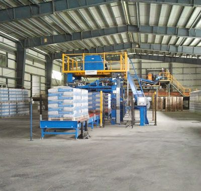
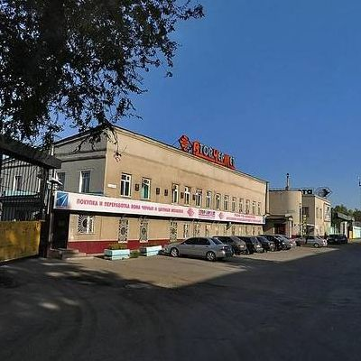
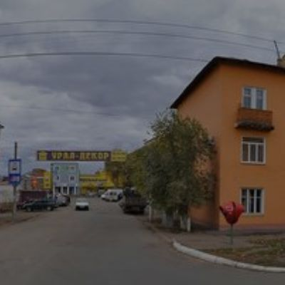
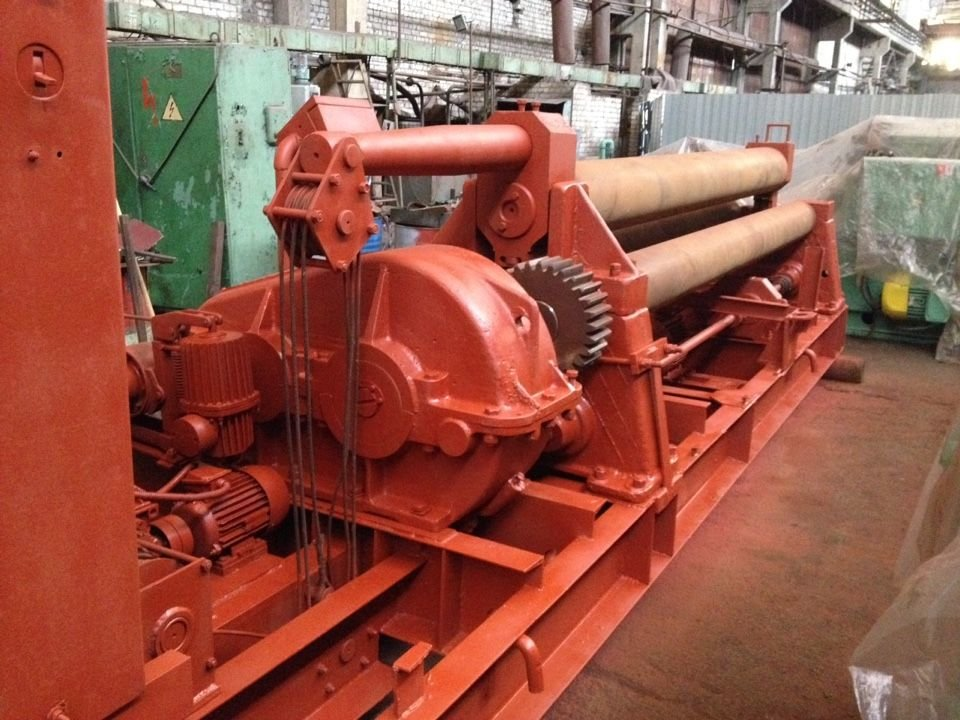
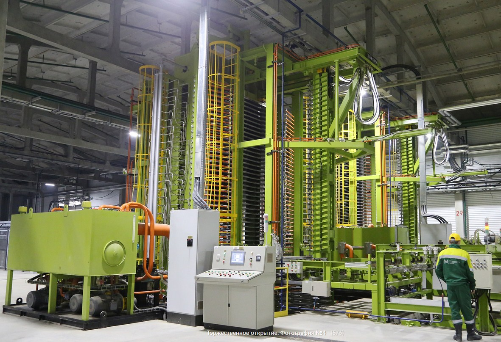

Где сдать макулатуру в Оренбурге
Приём старой бумаги
Приём макулатуры в Оренбурге производится
мелкими партиями, которые поступают от горожан.
Также предприятия сдают оптом большие объёмы
использованной бумаги. В этом случае пункты
приёма организуют вывоз вторсырья специальным
транспортом. Таким образом утилизируются тонн
ы мусора, в том числе и много макулатуры — Оре
нбург активно перерабатывает её в нужные това
ры. Их можно затем купить в магазине.
Сдать макулатуру в Оренбурге в скупку мож
но быстро. Последующая переработка ведётс
я на промышленными предприятиями в г. Волж
ске (Марийский ЦБК), г. Соликамске (объеди
нение «Соликамскбумпром»), Пермской целлюл
озно-бумажной компании, в объединении «Гипс
окартон» г. Ижевска. Любой завод по перерабо
тке охотно берёт любое количество макулатуры,
Оренбург наладил с ними связи, чтобы воврем
я утилизировать накопившийся бумажный мусор.
Он продаётся дорого, так как пункты скупки
отходов тщательно сортируют использованную бумагу.
Стоимость 1 кг старой бумаги в Оренбурге
в среднем придерживается цены по России.
За килограмм можно получить от 2 до 7 рублей.
Точную информацию о том, сколько стоит покупка
бумажного сырья, можно узнать, позвонив непос
редственно в пункт приёма.
Цены указаны приблизительно и могут меняться ежене
дельно. Для точной информации - позвоните в пункт
ы приема и уточните информацию у них.
ООО Оренбургвторцветмет

Адрес:
460035, Оренбург, Фрунзе, 1вТелефон:
+7 (3532) 56-90-38, +7 (3532) 56-82-37Электорнная почта:
ovcm@mail.ruЧасы работы:
ПН-ПТ 09:00-18:00; СБ-ВC закрытоВиды деятельности:
Вторсырье, утилизация отходов в ОренбургеЗАО Оптимист

Адрес:
г.Оренбург, ш.Шарлыкское, д.5Телефон:
73532743084Часы работы:
Ежедневно 09:00-20:00Виды деятельности:
МакулатураООО Вторчермет

Адрес:
460004, Оренбург,Сибирский переулок, 1/1 Телефон:
+7–932–849–00–14,+7–932–849–00–91Часы работы:
Ежедневно 08:00–19:00, обед 12:00–13:00Виды деятельности:
Вывоз металлолома, демонтажООО "ЭВК+"

Адрес:
460050, город Оренбург, улица Ноябрьская, 39, 119 Телефон:
+7 (951) 035-25-34,+7 (950) 186-25-54ООО "ЭВК+"
Адрес:
ул. Донгузская, д. 20, оф. 3Телефон:
+7 (950) 186-25-54ООО «Ван трейд»

Адрес:
Оренбург,ул Беляевская, 2 Склад 35Телефон:
7(3532) 96-30-73,7(3532) 40-00-73Виды деятельности:
Продажа туалетной бумаги 2.75 руб. за рулон, в упаковке 30 рулонов.ООО «Крона Рециклинг»

Адрес:
Оренбург,ул. Механизаторов 11Телефон:
89058415515, + 7(3532) 37-45-71Электорнная почта:
ovcm@mail.ruООО «СФЕРА»
Адрес:
Оренбург,ул.Донгузская, д.8/3Телефон:
8 (800) 775-66-80, +7 (3532) 25-63-87Электорнная почта:
ovcm@mail.ruООО «ОренПартнёр»

Адрес:
ул. Котова, дом 46Телефон:
8 987 870 44 86